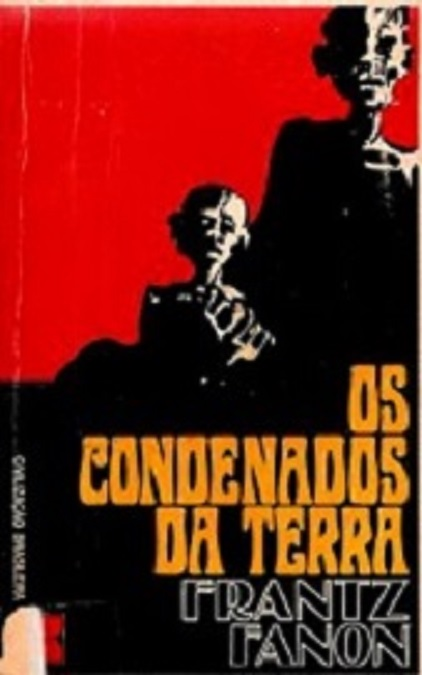
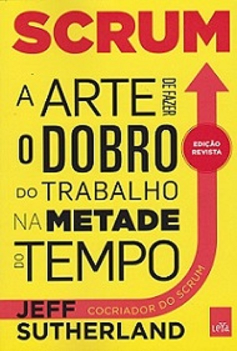

Ragga Books
| Foto | Descrição | Preço (R$) | Quantidade disponível |
|---|---|---|---|
|
Cem Anos de Solidão conta a história de uma família (os Buendía) e de uma cidade (Macondo) que estão isolados do resto do mundo, encerrados pela solidão. Com uma habilidade ímpar o autor nos leva para aquela cidade para condenar as mazelas de todo um povo. | R$ 39,90 | 2 |
|
A Divina Comédia é basicamente a história da conversão de um pecador ao caminho de Deus. Os versos sublinham a necessidade de se seguir o caminho do bem e da ética. O protagonista é o símbolo do ser humano vulgar e representa o cidadão comum, que tem dúvidas, hesita, é tentado pelo mal. | 44,90 | 1 |
|
Will e Lyra precisam fazer uma escolha simples, e a mais difícil de todas, com consequências brutais. A luneta âmbar é o último livro da trilogia Fronteiras do Universo, que teve início com A bússola de ouro e A faca sutil. Uma conclusão emocionante, que leva o leitor a novos e fantásticos universos. | 24,90 | 5 |
|  | Os Condenados da Terra, o clássico de Frantz Fanon, há muito esgotado em Portugal, é uma obra de referência, que influenciou as lutas de libertação do continente africano, incluindo os movimentos das colónias portuguesas, e que mantém toda a pertinência na análise das várias formas de colonialismo e de racismo. | 149,99 | 1 |
|  | Repleto de histórias empolgantes e exemplos reais. O método de gerenciamento de projetos conhecido como Scrum deve ser a ferramenta de produtividade mais largamente empregada entre as empresas de alta tecnologia. Jeff Sutherland tem sido brilhantemente bem-sucedido em sua missão de pôr esse recurso nas mãos de mais negócios em todo o mundo. | 20,90 | 10 |